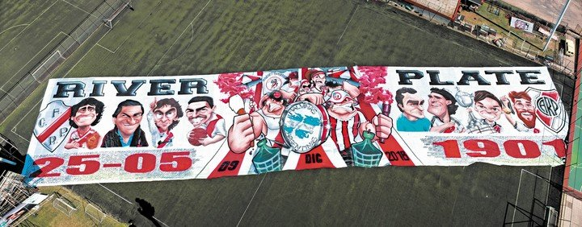
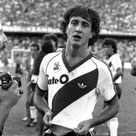
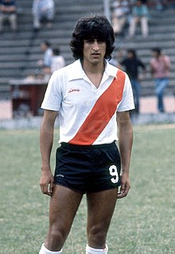
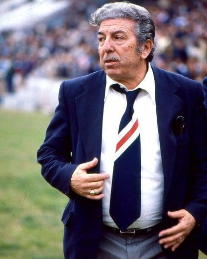
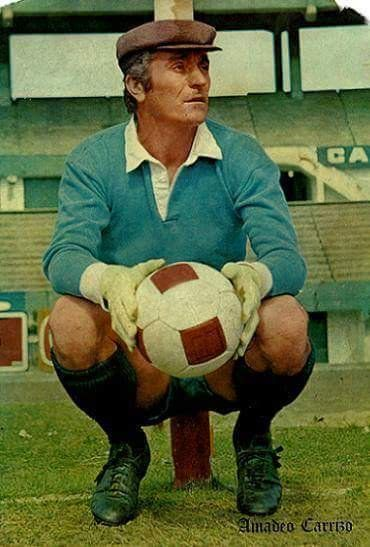
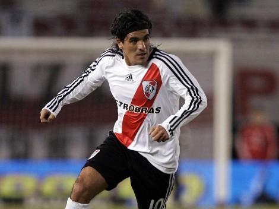
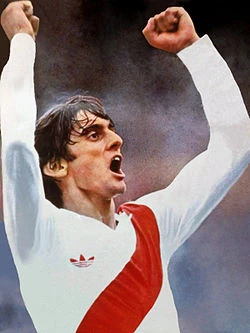
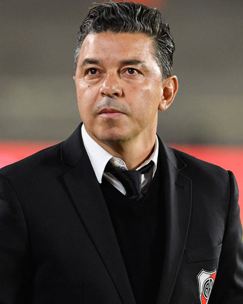
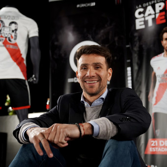

Idolos
La bandera de River Plate, uno de los clubes de fútbol más icónicos de Argentina y el mundo, cuenta con ocho ídolos que han dejado una huella imborrable en la historia de la institución. Estos jugadores se han convertido en leyendas vivientes para los fanáticos de River, y sus nombres están grabados en la memoria colectiva de la hinchada millonaria. Estos ocho ídolos de la bandera de River Plate representan la grandeza y la tradición de un club que ha dejado una huella imborrable en la historia del fútbol argentino y mundial. Su legado perdurará en el corazón de los hinchas riverplatenses por generaciones, y seguirán siendo recordados como las leyendas que dieron vida a la gloriosa historia del club.
Beto Alonso
Beto Alonso inició su carrera profesional en River Plate en 1970 y jugó para el club durante dos períodos distintos: 1970-1976 y 1981-1987. Durante su tiempo en el equipo, logró numerosos éxitos, incluyendo varios títulos de liga y copas locales e internacionales. Fue un jugador habilidoso, inteligente y creativo en el campo, destacándose por su visión de juego, precisión en los pases y capacidad para anotar goles. Uno de los momentos más icónicos de su carrera fue su participación en la final de la Copa Libertadores de 1986, donde River Plate venció a América de Cali, logrando así el primer título de la Copa Libertadores en la historia del club. Además, integró la selección argentina en varias ocasiones, participando en la Copa Mundial de la FIFA en 1978. Después de su retiro como jugador, Beto Alonso se mantuvo vinculado al fútbol, participando como entrenador y también en roles directivos. Su legado perdura en la memoria de los fanáticos de River Plate, y su contribución al club lo ha convertido en una figura emblemática en la historia del fútbol argentino.
Ramon Diaz
Ramon Díaz es una figura destacada en la historia del Club Atlético River Plate, tanto como jugador y como entrenador. Nacido el 29 de agosto de 1959 en La Rioja, Argentina, Díaz ha dejado una huella significativa en el fútbol argentino y en River en particular. Ramon Díaz tuvo dos períodos como jugador en River Plate, primero de 1977 a 1981 y luego de 1983 a 1989. Durante su tiempo como delantero, contribuyó a que River ganara varios títulos locales e internacionales. Fue parte fundamental del equipo que ganó la Copa Libertadores en 1986 y la Supercopa Sudamericana en 1997. La contribución más significativa de Díaz a River Plate llegó como entrenador. Dirigió al equipo en varios periodos, siendo el más destacado el triunfo en la Copa Libertadores de 1996 y la posterior conquista de la Supercopa Sudamericana y la Copa Intercontinental ese mismo año. Estos logros cimentaron su reputación como uno de los entrenadores más exitosos de la historia de River.
Angel Labruna
Labruna fue un delantero prolífico y se unió a las filas de River Plate en 1939, donde pasó la mayor parte de su carrera como jugador. Durante su tiempo en el club, contribuyó significativamente a la consecución de varios títulos locales e internacionales. Fue parte del equipo conocido como "La Máquina" en la década de 1940, junto con otros jugadores destacados como Di Stéfano y Moreno. Durante su carrera como jugador de River, Labruna anotó numerosos goles y se destacó por su habilidad goleadora y liderazgo en el campo. Ganó múltiples campeonatos de liga y copas, convirtiéndose en una figura emblemática del club. Su éxito más destacado como entrenador fue la conquista del Torneo Nacional en 1975 y 1977, así como el Torneo Metropolitano en 1979. El legado de Ángel Labruna en River Plate es inmenso. Su dedicación al club, tanto como jugador y entrenador, lo ha convertido en una figura venerada. Es recordado por su amor por la camiseta, su capacidad goleadora, y su papel en el desarrollo de una de las épocas más gloriosas de River Plate.
Amadeo Carrizo
Amadeo Carrizo fue un arquero legendario en la historia del fútbol argentino y, particularmente, en su paso por el Club Atlético River Plate. Nacido el 12 de junio de 1926 en Rufino, Santa Fe, Argentina, Carrizo dejó una huella indeleble en el fútbol mundial. Amadeo Carrizo se unió a River Plate en 1945 y se mantuvo en el club hasta 1968, consolidándose como uno de los arqueros más destacados de su época. Durante su carrera en River, contribuyó en la consecución de varios títulos, incluyendo seis títulos de liga argentinos y una Copa Argentina. Su estilo de juego innovador para un arquero, caracterizado por su habilidad para salir del área y participar en la construcción del juego, marcó una nueva era en la posición. Carrizo introdujo un enfoque revolucionario para la posición de arquero al aventurarse fuera del área y participar activamente en la distribución del balón. Su estilo audaz y arriesgado, aunque a veces controvertido, influyó en las generaciones futuras de arqueros.
Ariel Ortega
Ariel Ortega, conocido cariñosamente como "El Burrito", es una figura emblemática en la historia reciente del Club Atlético River Plate, donde tuvo una destacada carrera como futbolista. Aquí hay un resumen de su carrera en River. Ariel Ortega nació el 4 de marzo de 1974 en Ledesma, Jujuy, Argentina. Comenzó su carrera en River Plate a principios de la década de 1990 y rápidamente se destacó por su habilidad técnica, velocidad y capacidad para desequilibrar en el campo. Ortega tuvo varias etapas en River a lo largo de su carrera, jugando para el club en diferentes períodos, como 1991-1996, 1996-1997, 2000-2002, y más adelante en su carrera. Ortega fue conocido por su estilo de juego hábil y aguerrido. Era un mediocampista creativo, capaz de generar oportunidades de gol y marcar goles él mismo. Su habilidad para regatear, su visión de juego y su entrega en el campo lo convirtieron en un ídolo para los hinchas de River Plate.
Enzo Francescoli
Enzo Francescoli es considerado uno de los mayores ídolos en la historia del Club Atlético River Plate, donde tuvo una carrera destacada como futbolista. Enzo Francescoli nació el 12 de noviembre de 1961 en Montevideo, Uruguay. Inició su carrera en River Plate en la década de 1980, siendo parte del club en dos etapas significativas: primero de 1983 a 1986 y luego de 1994 a 1997. Durante su tiempo en River Plate, Francescoli contribuyó a la obtención de varios títulos, incluyendo cinco títulos de liga argentinos, la Copa Libertadores de 1996 y la Supercopa Sudamericana de 1997. Fue una figura clave en el equipo que ganó la Copa Libertadores, marcando goles importantes en la competición y liderando al equipo hacia el título. Francescoli era conocido por su elegancia en el campo, visión de juego excepcional y capacidad goleadora. Jugaba como mediocampista ofensivo y delantero, siendo una amenaza constante para las defensas rivales. Su calidad técnica y liderazgo lo convirtieron en el capitán del equipo. Después de su retiro como jugador, Francescoli ha continuado su relación con River Plate en roles directivos. Ha desempeñado funciones importantes en la gestión del club, manteniendo su conexión con la institución y contribuyendo a su desarrollo.
Marcelo Gallardo
Marcelo Gallardo, también conocido como "El Muñeco", es una figura destacada en la historia reciente del Club Atlético River Plate, tanto como jugador y, especialmente, como entrenador. Gallardo fue un talentoso mediocampista ofensivo que inició su carrera en River Plate en la década de 1990. Jugó para el club en dos etapas distintas: la primera de 1993 a 1999 y la segunda de 2003 a 2006. Durante su tiempo como jugador, contribuyó a la conquista de varios títulos, incluyendo cinco títulos de liga argentinos y la Copa Libertadores de 1996. El verdadero impacto de Marcelo Gallardo en River Plate ha sido como entrenador. Se convirtió en el director técnico del equipo en 2014, asumiendo el cargo en un momento en que el club enfrentaba dificultades. Bajo su dirección, River Plate ha experimentado un período dorado. Gallardo ha llevado a River a ganar numerosos títulos, destacándose la conquista de la Copa Libertadores en 2015 y 2018, y la Recopa Sudamericana en varias ocasiones. Uno de los logros más significativos fue la victoria en la final de la Copa Libertadores 2018 contra Boca Juniors en la famosa "Final de Madrid". Gallardo es conocido por su estilo de juego ofensivo, tácticas innovadoras y habilidad para gestionar situaciones de alta presión. Ha desarrollado una identidad de equipo ganador y ha consolidado a River como uno de los clubes más exitosos de América del Sur durante su mandato.
Leonardo Ponzio
su vinculación más significativa con el éxito llegó cuando se unió a River Plate. Ponzio se unió al club por primera vez en 2007, luego de pasar por diversos equipos en Europa. Regresó a River en 2012 y ha sido una presencia constante en el equipo desde entonces. Bajo la capitanía de Ponzio, River Plate ha experimentado una etapa dorada, ganando numerosos títulos. Algunos de los logros más destacados incluyen la Copa Libertadores de 2015 y 2018, la Recopa Sudamericana, y diversos títulos de liga argentinos. Ponzio ha sido una figura clave en momentos cruciales, como en la final de la Copa Libertadores 2018 contra Boca Juniors, donde su liderazgo y rendimiento fueron fundamentales para la victoria de River. Su longevidad en el club, la dedicación a la camiseta y su contribución a los éxitos de River Plate han ganado el respeto y el cariño de la afición. Ponzio es considerado uno de los referentes contemporáneos del club y un símbolo de la era exitosa bajo la dirección de Marcelo Gallardo. En resumen, la carrera de Leonardo Ponzio en River Plate está marcada por su liderazgo, su contribución en el mediocampo y su papel fundamental en la obtención de varios títulos importantes para el club.